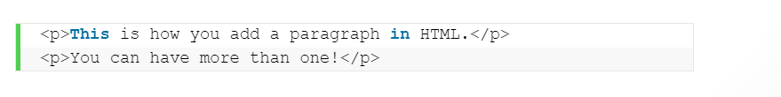

Jauza Kenar Indra Fawaid
220103095
TI22A3
HTML
Pengertian HTML Dan Sejarahnya
Hypertext Markup Language atau HTML adalah bahasa markup standar yang digunakan untuk membuat halaman website dan aplikasi web.Sejarah HTML diciptakan oleh Tim Berners-Lee, seorang ahli fisika di lembaga penelitian CERN yang berlokasi di Swiss.Versi pertama HTMLdirilis oleh Tim Berners Lee pada tahun 1991, yang memiliki 18 tag. Sejak saat itu, setiap kali ada versi barunya, pasti akan selalu ada tag dan attribute (tag modifier) yang juga baru.
Ketika bekerja dengan bahasa markup ini, Anda menggunakan struktur kode sederhana (tag dan attribute) untuk mark up halaman website. Misalnya, Anda membuat sebuah paragraf dengan menempatkan enclosed text di antara tag pembuka < p > dan tag penutup < /p >.

Berkat popularitasnya yang terus meningkat, bahasa markup ini kini dianggap sebagai standar web resmi.Spesifikasi HTML dikelola dan dikembangkan oleh World Wide Web Consortium (W3C). Berdasarkan HTML Element Reference milik Mozilla Developer Network, saat ini ada 140 tag HTML, meskipun sebagiannya sudah tidak lagi didukung oleh beberapa versi terbaru browser.Kemudian, pada tahun 2014, HTML5 mulai diperkenalkan. Dengan diperkenalkannya HTML5, terdapat semantic baru seperti < artcile >, < header >, dan < footer > yang memperjelas bagian-bagian dalam konten.Nah, setelah Anda tahu apa itu HTML, selanjutnya kami akan membahas cara kerjanya.
Apa yang Membedakan HTML dengan HTML5?
Sejak pertama diperkenalkan, bahasa ini telah melewati perkembangan yang cukup signifikan.W3C terus merilis versi dan update terbaru sembari mencetak sejarah dan mengukuhkan keberadaannya.HTML4 (dikenal sebagai “HTML”) dirilis pada tahun 1999 dan versi terbarunya diperkenalkan pada publik pada tahun 2014, yaitu HTML5, versi terbaru ini menambahkan lebih banyak fitur baru ke bahasa mark up ini.
Salah satu fitur canggih di HTML5 adalah dukungan untuk embed audio dan video. Jadi, alih-alih menggunakan Flash player, kita bisa menyematkan file video dan audio ke halaman website dengan manfaatkan tag < audio > < /audio > dan < video > < /video >. Fitur tersebut juga memiliki dukungan bawaan untuk SVG dan MathML untuk rumus matematika dan ilmiah.HTML5 juga memperkenalkan beberapa perbaikan pada semantic. Tag semantic baru mengirimkan informasi pada browser tentang arti konten, yang tak hanya bermanfaat bagi pembaca, tapi juga mesin pencari.